Statistical hypothesis testing for chameleon behaviour
Pablo Almaraz, RElab
2026-05-02
Source:vignettes/statistical-testing.Rmd
statistical-testing.Rmd1. Introduction
Visual inspection of scale-dependent metrics \(D(f)\) and \(\theta(f)\) can suggest chameleon behavior, but this is insufficient for rigorous scientific conclusions [1]. Several issues arise: sampling variability means that even scale-invariant systems produce non-constant profiles due to finite-sample effects; multiple comparisons across many frequency scales make spurious patterns likely by chance; arbitrary thresholds leave unclear what level of variation constitutes “chameleon” behavior; and effect magnitude considerations remind us that statistical significance does not imply practical importance.
The chameleon package provides surrogate-based permutation tests [2] that address these concerns, yielding p-values and effect sizes for principled inference.
2. The null hypothesis
2.1 H0: Scale-invariant dynamics
The null hypothesis states that \(D(f)\) and \(\theta(f)\) are constant across frequency scales:
\[H_0: D(f_1) = D(f_2) = \cdots = D(f_K)\] \[H_0: \theta(f_1) = \theta(f_2) = \cdots = \theta(f_K)\]
Under \(H_0\), any observed variation is due to sampling noise, not genuine scale-dependent dynamics.
2.2 H1: Chameleon behavior
The alternative hypothesis states that at least one metric varies systematically with scale:
\[H_1: D(f) \text{ and/or } \theta(f) \text{ vary with } f\]
2.3 Scale-shuffle permutation test
The primary testing method is scale shuffling [2]: randomly permute the frequency labels of the computed metrics. This preserves the marginal distributions of \(D\) and \(\theta\) while breaking any systematic relationship with scale.
For each surrogate, the procedure involves randomly reordering the \(K\) frequency labels, computing test statistics on the shuffled data, and comparing observed statistics to the null distribution.
This directly tests whether metrics depend on scale ordering.
2.4 P-value computation
Uses the conservative formula from Phipson & Smyth (2010) [3]:
\[p = \frac{\sum_{i=1}^{B} I(|T_i^*| \geq |T_{obs}|) + 1}{B + 1}\]
This avoids \(p = 0\) and provides valid permutation p-values.
3. Using chameleon_test()
3.1 Basic usage
The function accepts scale_metrics objects or raw time series:
# Generate test data
set.seed(42)
n <- 5000
dt <- 0.01
t <- seq(0, (n-1) * dt, by = dt)
x <- sin(2 * pi * 0.1 * t) +
0.5 * sin(2 * pi * 1.0 * t) +
0.2 * sin(2 * pi * 5.0 * t) +
0.15 * rnorm(n)
# Run analysis first
result <- chameleon_analysis(x, dt = dt, verbose = FALSE)
# Perform statistical test on scale_metrics
test <- chameleon_test(result$scale_metrics, n_surrogates = 999, verbose = TRUE)
#>
#> ⚙ CHAMELEON ATTRACTOR STATISTICAL TEST
#> Method: scale_shuffle surrogates (n = 999)
#> Statistics: D_trend, theta_trend
#> --------------------------------------------------
#> ⏱ Computing observed test statistics
#> ⏱ Generating 999 surrogates
#> ⏱ Computing p-values
#> ⏱ Running robustness checks
#> --------------------------------------------------
#> ✔ No chameleon behavior detected (p = 0.7129)3.2 Examining results
print(test)
#>
#> Chameleon attractor test
#> ============================================================
#> Surrogates: 999 (scale_shuffle method)
#> Multiple testing correction: fisher
#>
#> Test statistics:
#> ------------------------------------------------------------
#> Statistic Observed Null Mean Null SD p-value d
#> ------------------------------------------------------------
#> D_trend 0.250 -0.013 0.402 0.5880 0.65
#> theta_trend -0.250 0.013 0.402 0.5880 -0.65
#> ------------------------------------------------------------
#> Significance: *** p < 0.001, ** p < 0.01, * p < 0.05
#>
#> Combined p-value (fisher): 0.7129
#>
#> ============================================================
#> Conclusion: No chameleon behavior detected
#> Confidence: high
#>
#> Interpretation:
#> - Scale-dependent metrics do not vary significantly
#> - Attractor properties appear uniform across frequency scales
#>
#> Robustness: PASSED (1/3 checks)3.3 Test summary with interpretation
summary(test)
#>
#> Chameleon attractor test
#> ============================================================
#> Surrogates: 999 (scale_shuffle method)
#> Multiple testing correction: fisher
#>
#> Test statistics:
#> ------------------------------------------------------------
#> Statistic Observed Null Mean Null SD p-value d
#> ------------------------------------------------------------
#> D_trend 0.250 -0.013 0.402 0.5880 0.65
#> theta_trend -0.250 0.013 0.402 0.5880 -0.65
#> ------------------------------------------------------------
#> Significance: *** p < 0.001, ** p < 0.01, * p < 0.05
#>
#> Combined p-value (fisher): 0.7129
#>
#> ============================================================
#> Conclusion: No chameleon behavior detected
#> Confidence: high
#>
#> Interpretation:
#> - Scale-dependent metrics do not vary significantly
#> - Attractor properties appear uniform across frequency scales
#>
#> Robustness: PASSED (1/3 checks)3.5 Direct testing from time series
# Run test directly on time series (performs analysis internally)
test_direct <- chameleon_test(x, n_surrogates = 999, verbose = FALSE)
print(test_direct)
#>
#> Chameleon attractor test
#> ============================================================
#> Surrogates: 999 (scale_shuffle method)
#> Multiple testing correction: fisher
#>
#> Test statistics:
#> ------------------------------------------------------------
#> Statistic Observed Null Mean Null SD p-value d
#> ------------------------------------------------------------
#> D_trend 0.250 -0.028 0.402 0.5890 0.69
#> theta_trend -0.250 0.028 0.402 0.5890 -0.69
#> ------------------------------------------------------------
#> Significance: *** p < 0.001, ** p < 0.01, * p < 0.05
#>
#> Combined p-value (fisher): 0.7142
#>
#> ============================================================
#> Conclusion: No chameleon behavior detected
#> Confidence: high
#>
#> Interpretation:
#> - Scale-dependent metrics do not vary significantly
#> - Attractor properties appear uniform across frequency scales
#>
#> Robustness: PASSED (1/3 checks)4. Test statistics explained
4.1 D_trend and theta_trend (recommended)
Spearman rank correlation between metrics and log-frequency:
\[D_{\mathrm{trend}} = \rho_S(\log f, D(f))\]
Tests for monotonic relationships. Positive values indicate increasing dimension with frequency; negative values indicate decreasing dimension.
These are the recommended statistics for scale-shuffle testing because they are sensitive to scale ordering.
4.2 D_range and theta_range
\[D_{\mathrm{range}} = \max_f D(f) - \min_f D(f)\]
Measures total variation across scales.
Warning: Permutation-invariant. Not suitable for scale-shuffle testing (always yields \(p = 1\)). Include only with other surrogate methods.
4.3 D_cv and theta_cv
Coefficient of variation:
\[D_{\mathrm{cv}} = \frac{\mathrm{SD}(D)}{\mathrm{mean}(D)}\]
Normalized measure of variability. Also permutation-invariant.
4.4 D_max_gradient and theta_max_gradient
Maximum local change between adjacent scales:
\[D_{\mathrm{max\_grad}} = \max_k |D(f_{k+1}) - D(f_k)|\]
Detects abrupt transitions between scales. Sensitive to scale ordering.
4.5 Example: Comparing different test statistics
# Test with different statistics
test_trend <- chameleon_test(result$scale_metrics,
n_surrogates = 999,
test_statistics = c("D_trend", "theta_trend"),
verbose = FALSE)
test_gradient <- chameleon_test(result$scale_metrics,
n_surrogates = 999,
test_statistics = c("D_max_gradient", "theta_max_gradient"),
verbose = FALSE)
# Compare results
stats_compare <- data.frame(
Test = c(rep("Trend-based", 3), rep("Gradient-based", 3)),
Statistic = c("D_trend", "theta_trend", "Combined",
"D_max_gradient", "theta_max_gradient", "Combined"),
p_value = c(test_trend$p_values["D_trend"],
test_trend$p_values["theta_trend"],
test_trend$p_combined,
test_gradient$p_values["D_max_gradient"],
test_gradient$p_values["theta_max_gradient"],
test_gradient$p_combined)
)
kable(stats_compare, digits = 4,
caption = "Trend-based versus gradient-based test statistics")| Test | Statistic | p_value |
|---|---|---|
| Trend-based | D_trend | 0.6130 |
| Trend-based | theta_trend | 0.6130 |
| Trend-based | Combined | 0.7436 |
| Gradient-based | D_max_gradient | 0.2800 |
| Gradient-based | theta_max_gradient | 0.2800 |
| Gradient-based | Combined | 0.2780 |
5. Effect size interpretation
P-values indicate statistical significance, but effect sizes quantify practical importance [4]. Cohen’s d measures the standardized difference between observed and null:
\[d = \frac{T_{\mathrm{obs}} - \mathrm{mean}(T_{\mathrm{null}})}{\mathrm{SD}(T_{\mathrm{null}})}\]
5.1 Interpretation guidelines
effect_guide <- data.frame(
`Cohen's d` = c("|d| < 0.5", "0.5 <= |d| < 0.8", "0.8 <= |d| < 2.0", "|d| >= 2.0"),
Interpretation = c("Small effect", "Medium effect", "Large effect", "Very large effect"),
check.names = FALSE
)
kable(effect_guide)| Cohen’s d | Interpretation |
|---|---|
| |d| < 0.5 | Small effect |
| 0.5 <= |d| < 0.8 | Medium effect |
| 0.8 <= |d| < 2.0 | Large effect |
| |d| >= 2.0 | Very large effect |
A statistically significant result with small effect size may not be practically meaningful. Conversely, a non-significant result with medium effect size may warrant further investigation with more data.
5.2 Effect sizes from test results
kable(test$effect_sizes, digits = 3,
caption = "Effect sizes from chameleon test (Cohen's d)")| statistic | observed | null_mean | null_sd | cohens_d | percentile | snr |
|---|---|---|---|---|---|---|
| D_trend | 0.25 | -0.013 | 0.402 | 0.654 | 73.574 | 0.654 |
| theta_trend | -0.25 | 0.013 | 0.402 | -0.654 | 28.228 | 0.654 |
6. Multiple testing correction
When testing multiple statistics, p-values must be adjusted. Available methods:
6.1 Fisher’s method (default)
Combines p-values using [5]:
\[\chi^2 = -2 \sum_{i=1}^{k} \log(p_i)\]
Under \(H_0\), this follows a chi-squared distribution with \(2k\) degrees of freedom. Detects if any statistic is significant.
6.2 Bonferroni correction
\[p_{\mathrm{adjusted}} = \min(1, k \cdot p)\]
Conservative. Controls family-wise error rate.
6.4 Comparing correction methods
# Using different correction methods
test_fisher <- chameleon_test(result$scale_metrics, n_surrogates = 999,
correct_multiple = "fisher", verbose = FALSE)
test_bonf <- chameleon_test(result$scale_metrics, n_surrogates = 999,
correct_multiple = "bonferroni", verbose = FALSE)
test_bh <- chameleon_test(result$scale_metrics, n_surrogates = 999,
correct_multiple = "bh", verbose = FALSE)
correction_comparison <- data.frame(
Method = c("Fisher", "Bonferroni", "Benjamini-Hochberg"),
Combined_p = c(test_fisher$p_combined, test_bonf$p_combined, test_bh$p_combined),
Conclusion = c(test_fisher$conclusion, test_bonf$conclusion, test_bh$conclusion)
)
kable(correction_comparison, digits = 4)| Method | Combined_p | Conclusion |
|---|---|---|
| Fisher | 0.7067 | non-chameleon |
| Bonferroni | 1.0000 | non-chameleon |
| Benjamini-Hochberg | 0.5880 | non-chameleon |
7. Alternative surrogate methods
7.1 Fourier surrogates
Phase randomization preserving power spectrum [2]. Tests the linear null hypothesis:
# Generate Fourier surrogates from time series
surr_fourier <- generate_surrogates(x, n_surrogates = 5, method = "fourier")
kable(data.frame(
Method = "Fourier",
`Surrogates generated` = length(surr_fourier),
`Surrogate length` = length(surr_fourier[[1]]),
check.names = FALSE
), caption = "Fourier surrogate generation")| Method | Surrogates generated | Surrogate length |
|---|---|---|
| Fourier | 5 | 5000 |
7.2 IAAFT surrogates
Iterative Amplitude Adjusted Fourier Transform [6]. Preserves both power spectrum and amplitude distribution:
surr_iaaft <- generate_surrogates(x[1:2000], n_surrogates = 3, method = "iaaft")
kable(data.frame(
Method = "IAAFT",
`Surrogates generated` = length(surr_iaaft),
`Surrogate length` = length(surr_iaaft[[1]]),
check.names = FALSE
), caption = "IAAFT surrogate generation")| Method | Surrogates generated | Surrogate length |
|---|---|---|
| IAAFT | 3 | 2000 |
7.3 Block bootstrap
Preserves local temporal structure while destroying long-range dependence:
surr_block <- generate_surrogates(x, n_surrogates = 5, method = "block_bootstrap")
kable(data.frame(
Method = "Block bootstrap",
`Surrogates generated` = length(surr_block),
`Surrogate length` = length(surr_block[[1]]),
check.names = FALSE
), caption = "Block-bootstrap surrogate generation")| Method | Surrogates generated | Surrogate length |
|---|---|---|
| Block bootstrap | 5 | 5000 |
7.4 Visualizing surrogates
df_surr <- rbind(
data.frame(t = 1:500, value = x[1:500],
panel = factor("Original",
levels = c("Original", "Fourier",
"IAAFT", "Block bootstrap"))),
data.frame(t = 1:500, value = surr_fourier[[1]][1:500],
panel = factor("Fourier",
levels = c("Original", "Fourier",
"IAAFT", "Block bootstrap"))),
data.frame(t = 1:500, value = surr_iaaft[[1]][1:500],
panel = factor("IAAFT",
levels = c("Original", "Fourier",
"IAAFT", "Block bootstrap"))),
data.frame(t = 1:500, value = surr_block[[1]][1:500],
panel = factor("Block bootstrap",
levels = c("Original", "Fourier",
"IAAFT", "Block bootstrap")))
)
ggplot(df_surr, aes(x = .data$t, y = .data$value, colour = .data$panel)) +
geom_line(linewidth = 0.4) +
facet_wrap(~ panel, ncol = 1, strip.position = "top") +
scale_colour_manual(values = c("Original" = "black",
"Fourier" = "#3366CC",
"IAAFT" = "#CC3333",
"Block bootstrap" = "#2D8B57"),
guide = "none") +
labs(x = "Time index", y = "x",
subtitle = "Original signal versus three surrogate constructions (first 500 samples)",
caption = "Fourier preserves power spectrum; IAAFT preserves spectrum + amplitude distribution; block bootstrap preserves local temporal structure.") +
theme_minimal(base_size = 11) +
theme(strip.text = ggplot2::element_text(face = "bold"),
plot.caption = ggplot2::element_text(color = "grey40", size = 8, hjust = 0))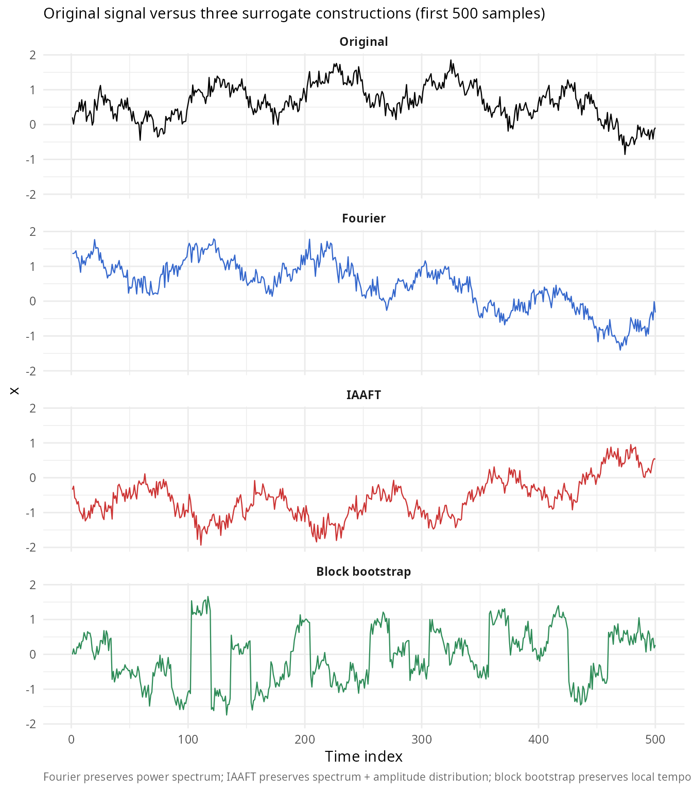
8. Non-stationary chameleon testing
For long time series with potential regime changes, use
chameleon_test_nonstationary():
8.1 The non-stationary problem
In non-autonomous dynamical systems, the governing equations depend explicitly on time: \(\dot{x} = f(x, t)\). This means the attractor structure can evolve, and chameleon behavior may appear, disappear, or change character as the system traverses different dynamical regimes [1].
Examples include seasonally forced climate oscillators, neural systems with varying input drives, ecosystems under environmental change, and financial markets with regime switching.
8.2 Analysis procedure
The analysis procedure involves dividing the time series into overlapping windows; for each window, computing MEMD decomposition, scale-dependent metrics, and chameleon index; analyzing temporal evolution of chameleon index; testing for stationarity of chameleon character; and detecting change points if present.
8.3 Example: Non-stationary analysis
# Generate time series with regime change
set.seed(123)
n <- 8000
dt <- 0.01
t <- seq(0, (n-1) * dt, by = dt)
# Create signal with changing characteristics over time
# First half: simple dynamics
# Second half: more complex multi-scale behavior
x_ns <- numeric(n)
mid <- n / 2
# First regime: single frequency
x_ns[1:mid] <- sin(2 * pi * 0.2 * t[1:mid]) + 0.1 * rnorm(mid)
# Second regime: multi-scale
x_ns[(mid+1):n] <- sin(2 * pi * 0.1 * t[(mid+1):n]) +
0.4 * sin(2 * pi * 0.5 * t[(mid+1):n]) +
0.2 * sin(2 * pi * 2 * t[(mid+1):n]) +
0.15 * rnorm(n - mid)
# Run non-stationary test
# Note: parallel = FALSE required for RMarkdown compatibility
ns_test <- chameleon_test_nonstationary(
x_ns,
window_size = 1500,
step_size = 400,
chameleon_index = "combined",
n_surrogates = 0,
parallel = FALSE,
verbose = TRUE
)
#>
#> ⚙ NON-STATIONARY CHAMELEON TEST
#> Time series length: 8000
#> Window size: 1500 (step: 400)
#> Number of windows: 17
#> Chameleon index: combined
#> --------------------------------------------------
#> ⏱ Processing windows
#> ⏱ Computing global test
#> ⏱ Testing stationarity
#> ⏱ Detecting change points
#> --------------------------------------------------
#> ¡ Global test not available (n_surrogates = 0)
#> ✔ Chameleon character is stationary8.4 Non-stationary test results
print(ns_test)
#>
#> Non-stationary chameleon attractor test
#> ============================================================
#> Time series length: 8000
#> Windows: 17 (size: 1500, step: 400)
#> Chameleon index: combined
#> Valid windows: 17 (100.0%)
#>
#> ------------------------------------------------------------
#> Global chameleon test
#> ------------------------------------------------------------
#>
#> ------------------------------------------------------------
#> Chameleon index summary
#> ------------------------------------------------------------
#> Mean: 0.601
#> SD: 0.174
#> Range: [0.202, 0.875]
#>
#> ------------------------------------------------------------
#> Stationarity of chameleon behavior
#> ------------------------------------------------------------
#> ✔ Chameleon character is STATIONARY
#>
#> Component tests:
#> Runs test: z = 0.77, p = 0.4419
#> Mann-Kendall: z = 0.17, p = 0.8687 (increasing)
#> Linear trend: slope = 0.0000, p = 0.7427
#>
#> ------------------------------------------------------------
#> Change point detection
#> ------------------------------------------------------------
#> ✔ No significant change points detected8.6 Stationarity tests explained
The stationarity test combines three components: runs test (tests for non-random patterns in the chameleon index sequence); Mann-Kendall test (tests for monotonic trend); and linear trend test (tests for significant linear relationship with time).
if (!is.null(ns_test$stationarity_test)) {
st <- ns_test$stationarity_test
stationarity_tbl <- data.frame(
Test = c("Runs", "Mann-Kendall", "Linear trend"),
`Statistic` = c("z", "z", "slope"),
Value = c(round(st$tests$runs$z, 3),
round(st$tests$mann_kendall$z, 3),
round(st$tests$linear_trend$slope, 6)),
p_value = c(round(st$tests$runs$p_value, 4),
round(st$tests$mann_kendall$p_value, 4),
round(st$tests$linear_trend$p_value, 4)),
Note = c("",
paste("trend:", st$tests$mann_kendall$trend_direction),
""),
check.names = FALSE
)
kable(stationarity_tbl,
caption = paste0("Stationarity tests; combined conclusion: ",
st$combined_conclusion))
}| Test | Statistic | Value | p_value | Note |
|---|---|---|---|---|
| Runs | z | 0.769000 | 0.4419 | |
| Mann-Kendall | z | 0.165000 | 0.8687 | trend: increasing |
| Linear trend | slope | 0.000007 | 0.7427 |
8.7 Change point detection
if (!is.null(ns_test$change_points)) {
cp <- ns_test$change_points
cp_tbl <- data.frame(
Quantity = c("Has change point",
"Number of change points",
"Change point times"),
Value = c(as.character(cp$has_changepoint),
if (cp$has_changepoint) as.character(cp$n_changepoints) else NA_character_,
if (cp$has_changepoint) paste(cp$change_point_times, collapse = ", ") else NA_character_)
)
kable(cp_tbl, caption = "Change point detection")
}| Quantity | Value |
|---|---|
| Has change point | FALSE |
| Number of change points | NA |
| Change point times | NA |
9. Robustness checks
9.1 Automatic robustness assessment
The test automatically performs robustness checks: embedding sensitivity (re-tests with \(m \pm 1\), \(\tau \pm 2\)) and split-half (tests first and second halves separately).
# Run test with robustness checks enabled
test_robust <- chameleon_test(result$scale_metrics,
n_surrogates = 999,
robustness_checks = TRUE,
verbose = FALSE)
robust_tbl <- data.frame(
Quantity = c("Conclusion", "Confidence"),
Value = c(test_robust$conclusion, test_robust$confidence)
)
kable(robust_tbl, caption = "Robust chameleon test result")| Quantity | Value |
|---|---|
| Conclusion | non-chameleon |
| Confidence | high |
10. Practical recommendations
10.1 Minimum sample size
sample_guide <- data.frame(
`Sample size` = c("n < 1000", "1000 <= n < 2000", "2000 <= n < 5000", "n >= 5000"),
Recommendation = c("Results may be unreliable; interpret with caution",
"Minimum for exploratory analysis",
"Recommended for standard analysis",
"Preferred for publication-quality results"),
check.names = FALSE
)
kable(sample_guide)| Sample size | Recommendation |
|---|---|
| n < 1000 | Results may be unreliable; interpret with caution |
| 1000 <= n < 2000 | Minimum for exploratory analysis |
| 2000 <= n < 5000 | Recommended for standard analysis |
| n >= 5000 | Preferred for publication-quality results |
10.2 Choosing n_surrogates
surr_guide <- data.frame(
n_surrogates = c(99, 199, 499, 999),
`Min p-value` = c(0.01, 0.005, 0.002, 0.001),
Use_case = c("Quick exploratory analysis",
"Standard analysis",
"Higher resolution",
"Publication-quality"),
check.names = FALSE
)
kable(surr_guide)| n_surrogates | Min p-value | Use_case |
|---|---|---|
| 99 | 0.010 | Quick exploratory analysis |
| 199 | 0.005 | Standard analysis |
| 499 | 0.002 | Higher resolution |
| 999 | 0.001 | Publication-quality |
10.3 When to use nonstationary test
Use chameleon_test_nonstationary() when the time series
spans long periods with potential regime changes, when visual inspection
suggests non-constant dynamics, when the system is non-autonomous
(governing equations depend on time), or when investigating
when chameleon behavior occurs, not just if.
10.4 Interpreting non-significant results
A non-significant result (\(p > \alpha\)) does not prove the absence of chameleon behavior. Consider that insufficient sample size means power may be low, that the effect may be real but small, and that scale-dependent dynamics may exist at timescales not captured by MEMD.
11. Complete workflow example
# 1. Load or generate data
set.seed(42)
n <- 6000
dt <- 0.01
t <- seq(0, (n-1) * dt, by = dt)
x_workflow <- sin(2 * pi * 0.1 * t) +
0.5 * sin(2 * pi * 0.8 * t) +
0.25 * sin(2 * pi * 3.0 * t) +
0.12 * rnorm(n)
# 2. Run analysis
result_wf <- chameleon_analysis(x_workflow, dt = dt, verbose = FALSE)
print(result_wf)
#>
#> Chameleon Attractor Analysis Results
#> ========================================
#>
#> Input data:
#> Original series length: 6000
#>
#> Embedding parameters:
#> Dimension: m = 4
#> Time delay: tau = 148
#> Embedded trajectory: 5556 x 4
#>
#> MEMD decomposition:
#> Number of IMFs: 7
#> Frequency range: [0.0003, 0.1245] Hz
#>
#> Full attractor metrics:
#> Mean dimension: <d> = 2.899 (sd = 0.607)
#> Mean persistence: <θ> = 0.058 (sd = 0.019)
#>
#> Chameleon detection:
#> Status: CHAMELEON BEHAVIOR DETECTED
#> Dimension variation: 1.024
#> Persistence variation: 0.038
# 3. Statistical test
test_wf <- chameleon_test(
result_wf$scale_metrics,
n_surrogates = 199,
robustness_checks = TRUE,
verbose = FALSE
)
# 4. Examine results
print(test_wf)
#>
#> Chameleon attractor test
#> ============================================================
#> Surrogates: 199 (scale_shuffle method)
#> Multiple testing correction: fisher
#>
#> Test statistics:
#> ------------------------------------------------------------
#> Statistic Observed Null Mean Null SD p-value d
#> ------------------------------------------------------------
#> D_trend 0.250 -0.048 0.404 0.6100 0.74
#> theta_trend -0.250 0.048 0.404 0.6100 -0.74
#> ------------------------------------------------------------
#> Significance: *** p < 0.001, ** p < 0.01, * p < 0.05
#>
#> Combined p-value (fisher): 0.7400
#>
#> ============================================================
#> Conclusion: No chameleon behavior detected
#> Confidence: high
#>
#> Interpretation:
#> - Scale-dependent metrics do not vary significantly
#> - Attractor properties appear uniform across frequency scales
#>
#> Robustness: PASSED (1/3 checks)
summary(test_wf)
#>
#> Chameleon attractor test
#> ============================================================
#> Surrogates: 199 (scale_shuffle method)
#> Multiple testing correction: fisher
#>
#> Test statistics:
#> ------------------------------------------------------------
#> Statistic Observed Null Mean Null SD p-value d
#> ------------------------------------------------------------
#> D_trend 0.250 -0.048 0.404 0.6100 0.74
#> theta_trend -0.250 0.048 0.404 0.6100 -0.74
#> ------------------------------------------------------------
#> Significance: *** p < 0.001, ** p < 0.01, * p < 0.05
#>
#> Combined p-value (fisher): 0.7400
#>
#> ============================================================
#> Conclusion: No chameleon behavior detected
#> Confidence: high
#>
#> Interpretation:
#> - Scale-dependent metrics do not vary significantly
#> - Attractor properties appear uniform across frequency scales
#>
#> Robustness: PASSED (1/3 checks)
# 5. Visualize
plot(result_wf)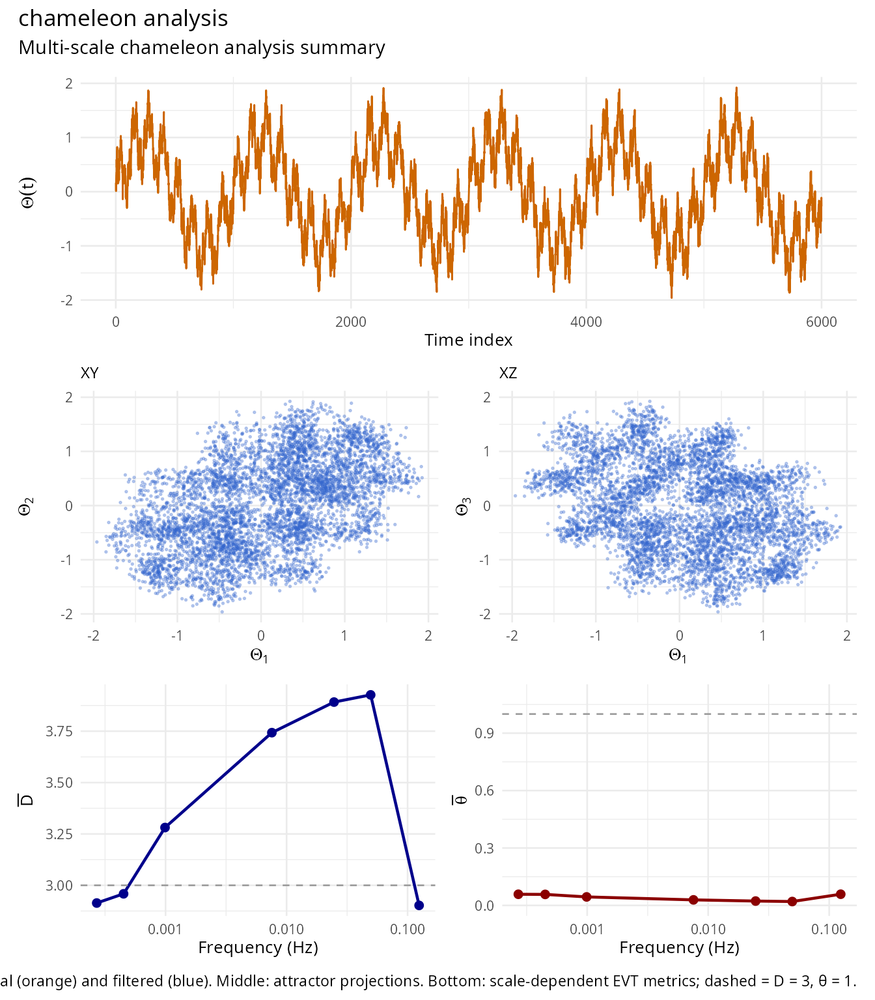
plot(test_wf)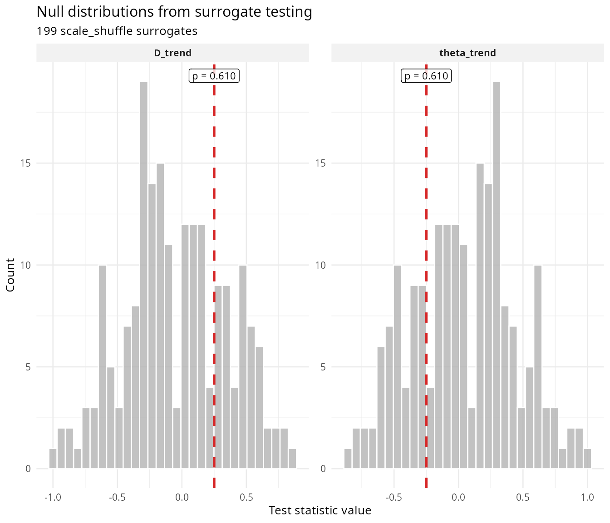
Appendix A: Synthetic signals tested
This appendix presents a systematic evaluation of chameleon detection on various synthetic signals with known properties.
A.1 Pure noise (null case)
set.seed(100)
n <- 5000
x_noise <- rnorm(n)
result_noise <- chameleon_analysis(x_noise, verbose = FALSE)
test_noise <- chameleon_test(result_noise$scale_metrics, n_surrogates = 9999, verbose = FALSE)
print(test_noise)
#>
#> Chameleon attractor test
#> ============================================================
#> Surrogates: 9999 (scale_shuffle method)
#> Multiple testing correction: fisher
#>
#> Test statistics:
#> ------------------------------------------------------------
#> Statistic Observed Null Mean Null SD p-value d
#> ------------------------------------------------------------
#> D_trend -0.648 -0.005 0.332 0.0496 -1.94 *
#> theta_trend -0.594 -0.005 0.334 0.0789 -1.77
#> ------------------------------------------------------------
#> Significance: *** p < 0.001, ** p < 0.01, * p < 0.05
#>
#> Combined p-value (fisher): 0.0256
#>
#> ============================================================
#> Conclusion: CHAMELEON ATTRACTOR DETECTED
#> Confidence: moderate
#>
#> Interpretation:
#> - D decreases significantly with frequency
#> - Effect sizes are large (|d| > 0.8)
#>
#> Warnings:
#> ⚠ P-value at lower limit of resolution. Consider increasing n_surrogates.
plot(result_noise)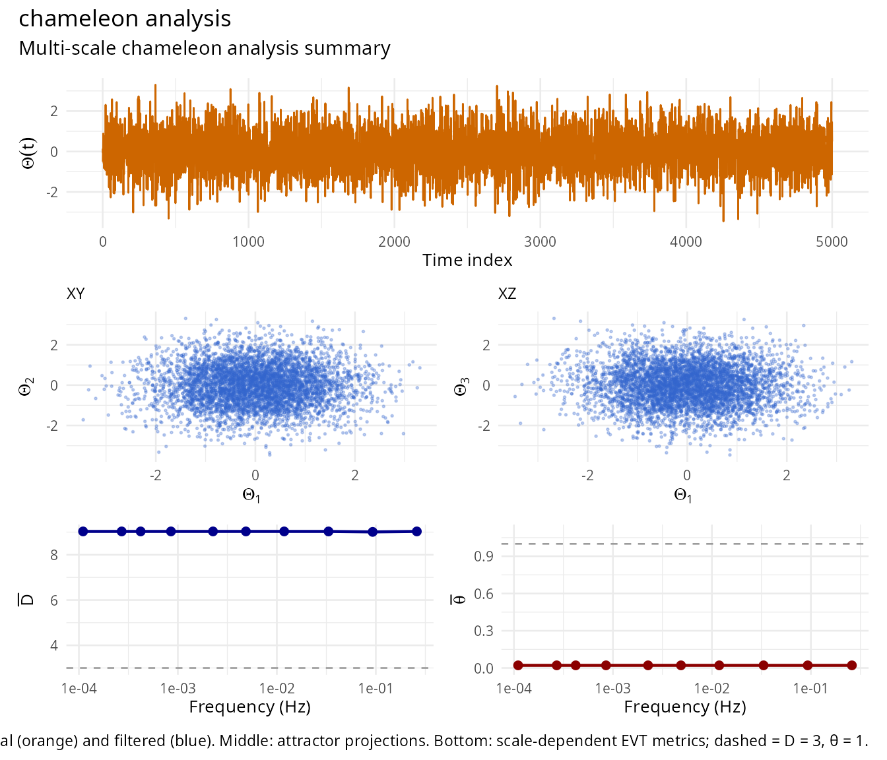
A.2 AR(1) process
set.seed(101)
x_ar1 <- arima.sim(list(ar = 0.9), n = 5000)
result_ar1 <- chameleon_analysis(as.numeric(x_ar1), verbose = FALSE)
test_ar1 <- chameleon_test(result_ar1$scale_metrics, n_surrogates = 9999, verbose = FALSE)
print(test_ar1)
#>
#> Chameleon attractor test
#> ============================================================
#> Surrogates: 9999 (scale_shuffle method)
#> Multiple testing correction: fisher
#>
#> Test statistics:
#> ------------------------------------------------------------
#> Statistic Observed Null Mean Null SD p-value d
#> ------------------------------------------------------------
#> D_trend 0.633 0.003 0.354 0.0772 1.78
#> theta_trend -0.603 0.000 0.355 0.0957 -1.70
#> ------------------------------------------------------------
#> Significance: *** p < 0.001, ** p < 0.01, * p < 0.05
#>
#> Combined p-value (fisher): 0.0436
#>
#> ============================================================
#> Conclusion: CHAMELEON ATTRACTOR DETECTED
#> Confidence: moderate
#>
#> Interpretation:
#> - Effect sizes are large (|d| > 0.8)
#>
#> Warnings:
#> ⚠ P-value at lower limit of resolution. Consider increasing n_surrogates.
plot(result_ar1)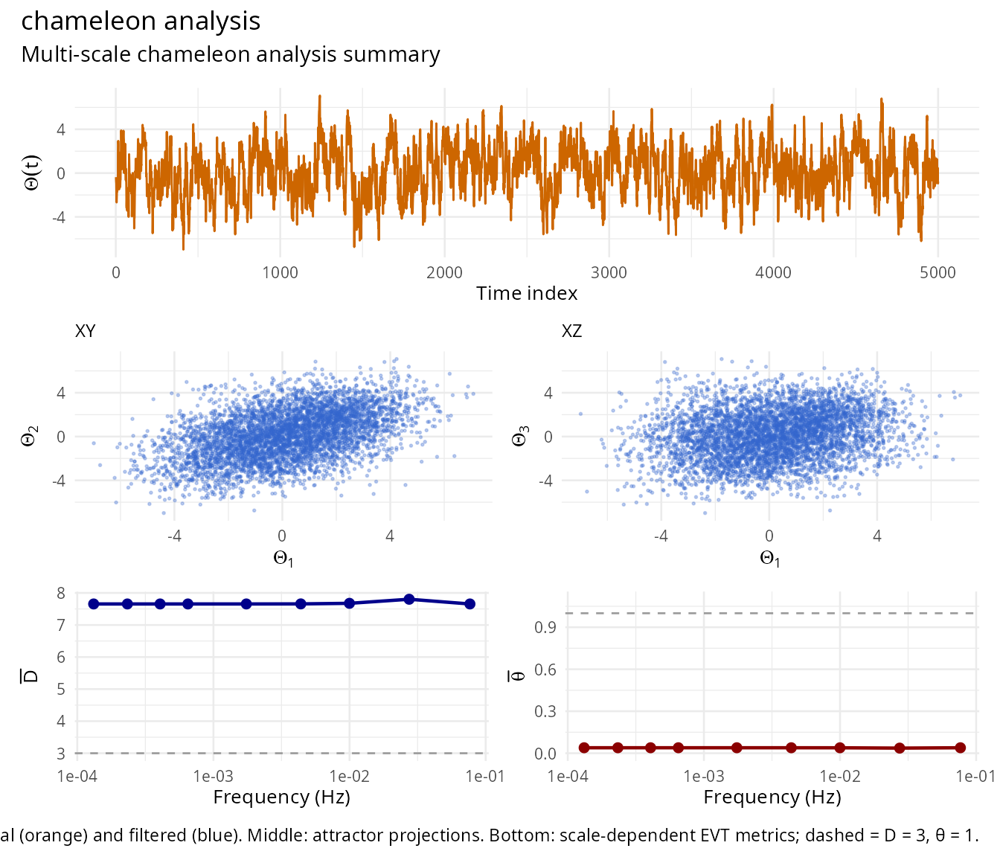
A.3 Simple sinusoid
set.seed(102)
t <- seq(0, 50, by = 0.01)
x_sine <- sin(2 * pi * 0.5 * t) + 0.1 * rnorm(length(t))
result_sine <- chameleon_analysis(x_sine, verbose = FALSE)
test_sine <- chameleon_test(result_sine$scale_metrics, n_surrogates = 999, verbose = FALSE)
print(test_sine)
#>
#> Chameleon attractor test
#> ============================================================
#> Surrogates: 999 (scale_shuffle method)
#> Multiple testing correction: fisher
#>
#> Test statistics:
#> ------------------------------------------------------------
#> Statistic Observed Null Mean Null SD p-value d
#> ------------------------------------------------------------
#> D_trend 0.238 -0.013 0.384 0.5980 0.65
#> theta_trend -0.214 0.019 0.370 0.6280 -0.63
#> ------------------------------------------------------------
#> Significance: *** p < 0.001, ** p < 0.01, * p < 0.05
#>
#> Combined p-value (fisher): 0.7433
#>
#> ============================================================
#> Conclusion: No chameleon behavior detected
#> Confidence: high
#>
#> Interpretation:
#> - Scale-dependent metrics do not vary significantly
#> - Attractor properties appear uniform across frequency scales
#>
#> Robustness: PASSED (1/3 checks)
plot(result_sine)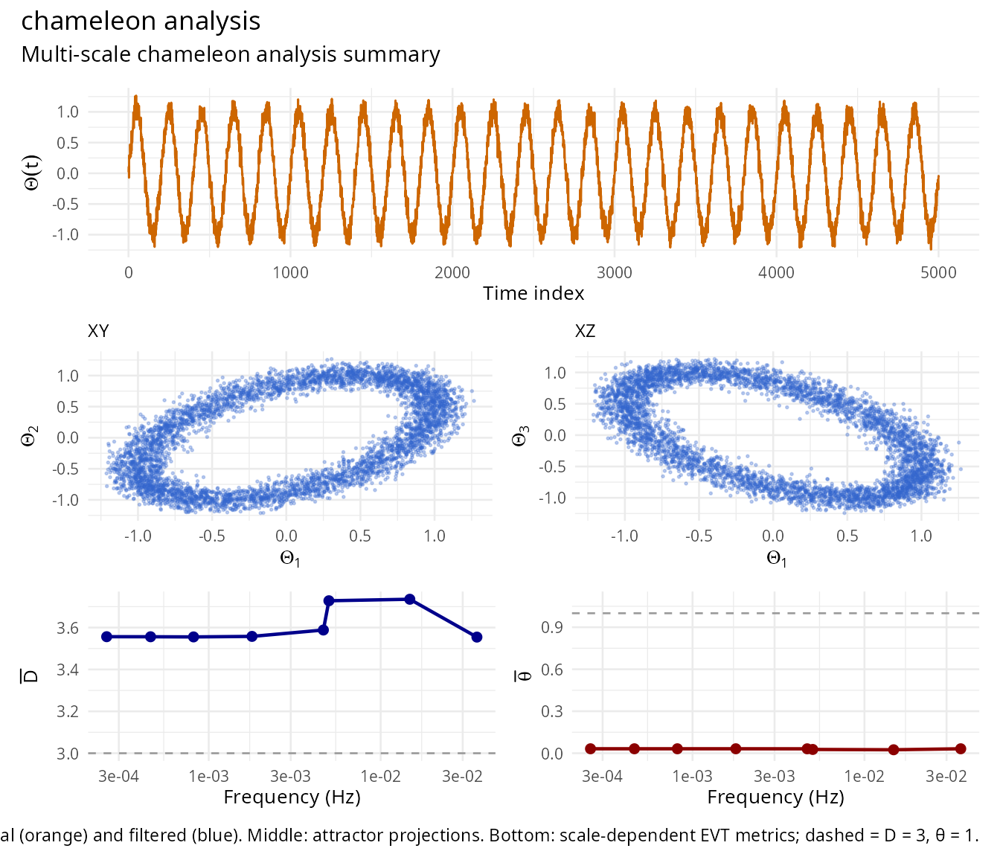
A.4 Multi-frequency signal
set.seed(103)
t <- seq(0, 100, by = 0.01)
x_multi <- sin(2 * pi * 0.1 * t) +
0.5 * sin(2 * pi * 1.0 * t) +
0.25 * sin(2 * pi * 5.0 * t) +
0.1 * rnorm(length(t))
result_multi <- chameleon_analysis(x_multi, verbose = FALSE)
test_multi <- chameleon_test(result_multi$scale_metrics, n_surrogates = 999, verbose = FALSE)
print(test_multi)
#>
#> Chameleon attractor test
#> ============================================================
#> Surrogates: 999 (scale_shuffle method)
#> Multiple testing correction: fisher
#>
#> Test statistics:
#> ------------------------------------------------------------
#> Statistic Observed Null Mean Null SD p-value d
#> ------------------------------------------------------------
#> D_trend 0.400 0.011 0.355 0.2880 1.09
#> theta_trend -0.333 -0.011 0.354 0.4070 -0.91
#> ------------------------------------------------------------
#> Significance: *** p < 0.001, ** p < 0.01, * p < 0.05
#>
#> Combined p-value (fisher): 0.3685
#>
#> ============================================================
#> Conclusion: No chameleon behavior detected
#> Confidence: high
#>
#> Interpretation:
#> - Scale-dependent metrics do not vary significantly
#> - Attractor properties appear uniform across frequency scales
#>
#> Warnings:
#> ⚠ P-value at lower limit of resolution. Consider increasing n_surrogates.
plot(result_multi)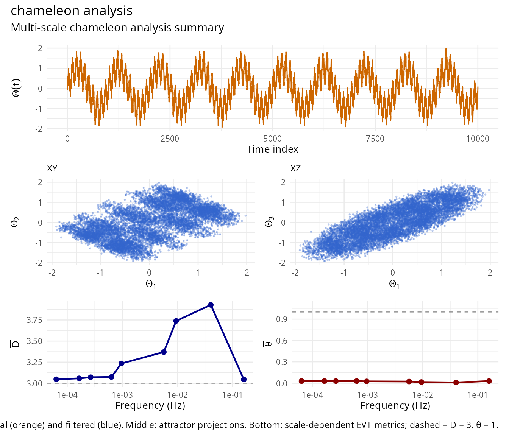
A.5 Lorenz system
set.seed(104)
n <- 10000
dt <- 0.01
x <- y <- z <- numeric(n)
x[1] <- 1; y[1] <- 1; z[1] <- 1
sigma <- 10; rho <- 28; beta <- 8/3
for (i in 2:n) {
x[i] <- x[i-1] + dt * sigma * (y[i-1] - x[i-1])
y[i] <- y[i-1] + dt * (x[i-1] * (rho - z[i-1]) - y[i-1])
z[i] <- z[i-1] + dt * (x[i-1] * y[i-1] - beta * z[i-1])
}
x_lorenz <- x + 0.1 * rnorm(n)
result_lorenz <- chameleon_analysis(x_lorenz, m = 3, tau = 10, verbose = FALSE)
test_lorenz <- chameleon_test(result_lorenz$scale_metrics, n_surrogates = 999, verbose = FALSE)
print(test_lorenz)
#>
#> Chameleon attractor test
#> ============================================================
#> Surrogates: 999 (scale_shuffle method)
#> Multiple testing correction: fisher
#>
#> Test statistics:
#> ------------------------------------------------------------
#> Statistic Observed Null Mean Null SD p-value d
#> ------------------------------------------------------------
#> D_trend 0.383 -0.002 0.363 0.3470 1.06
#> theta_trend -0.317 0.018 0.360 0.4220 -0.93
#> ------------------------------------------------------------
#> Significance: *** p < 0.001, ** p < 0.01, * p < 0.05
#>
#> Combined p-value (fisher): 0.4278
#>
#> ============================================================
#> Conclusion: No chameleon behavior detected
#> Confidence: high
#>
#> Interpretation:
#> - Scale-dependent metrics do not vary significantly
#> - Attractor properties appear uniform across frequency scales
#>
#> Warnings:
#> ⚠ P-value at lower limit of resolution. Consider increasing n_surrogates.
plot(result_lorenz)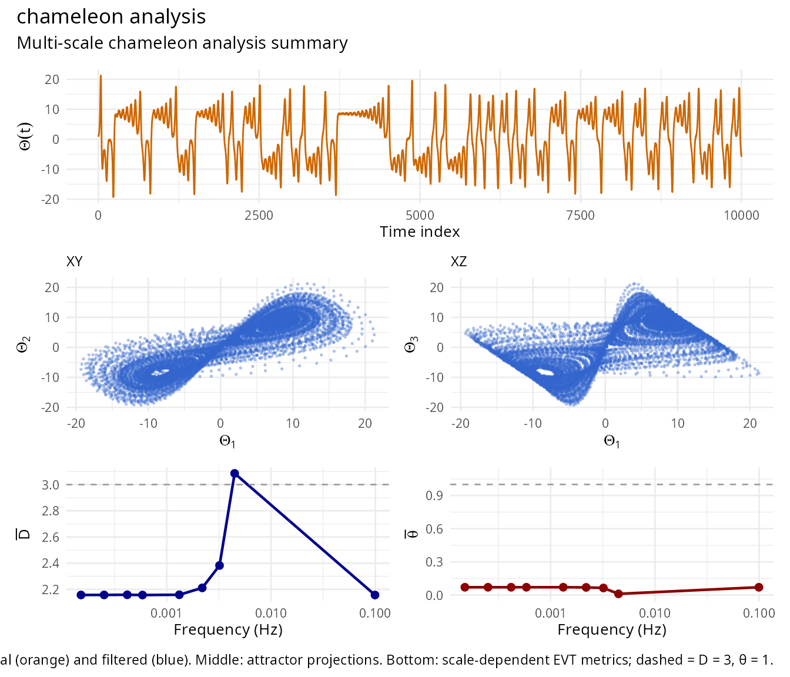
A.6 Rossler system
set.seed(105)
n <- 10000
dt <- 0.05
x <- y <- z <- numeric(n)
x[1] <- 1; y[1] <- 1; z[1] <- 1
a <- 0.2; b <- 0.2; c <- 5.7
for (i in 2:n) {
x[i] <- x[i-1] + dt * (-y[i-1] - z[i-1])
y[i] <- y[i-1] + dt * (x[i-1] + a * y[i-1])
z[i] <- z[i-1] + dt * (b + z[i-1] * (x[i-1] - c))
}
x_rossler <- x + 0.1 * rnorm(n)
result_rossler <- chameleon_analysis(x_rossler, m = 3, tau = 10, verbose = FALSE)
test_rossler <- chameleon_test(result_rossler$scale_metrics, n_surrogates = 999, verbose = FALSE)
print(test_rossler)
#>
#> Chameleon attractor test
#> ============================================================
#> Surrogates: 999 (scale_shuffle method)
#> Multiple testing correction: fisher
#>
#> Test statistics:
#> ------------------------------------------------------------
#> Statistic Observed Null Mean Null SD p-value d
#> ------------------------------------------------------------
#> D_trend 0.345 0.006 0.333 0.3180 1.02
#> theta_trend 0.042 0.009 0.348 0.9260 0.10
#> ------------------------------------------------------------
#> Significance: *** p < 0.001, ** p < 0.01, * p < 0.05
#>
#> Combined p-value (fisher): 0.6545
#>
#> ============================================================
#> Conclusion: No chameleon behavior detected
#> Confidence: high
#>
#> Interpretation:
#> - Scale-dependent metrics do not vary significantly
#> - Attractor properties appear uniform across frequency scales
#>
#> Warnings:
#> ⚠ P-value at lower limit of resolution. Consider increasing n_surrogates.
plot(result_rossler)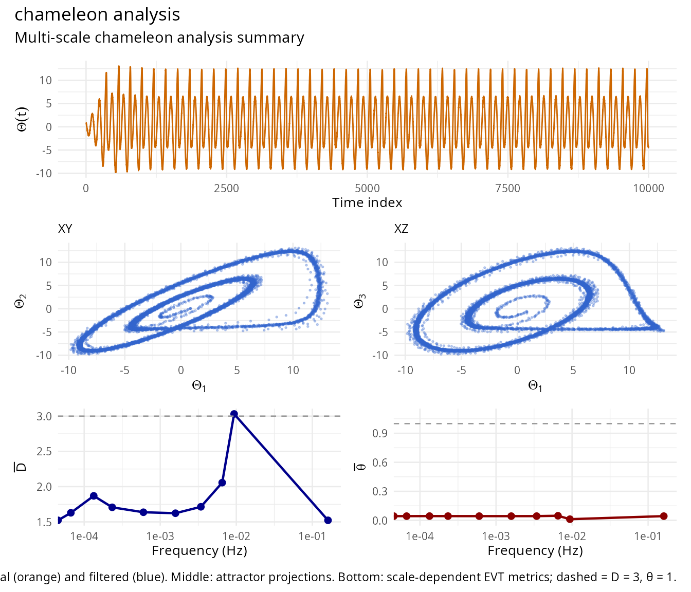
A.7 Van der Pol oscillator
set.seed(106)
n <- 8000
dt <- 0.02
x <- y <- numeric(n)
x[1] <- 2; y[1] <- 0
mu <- 2.0
for (i in 2:n) {
x[i] <- x[i-1] + dt * y[i-1]
y[i] <- y[i-1] + dt * (mu * (1 - x[i-1]^2) * y[i-1] - x[i-1])
}
x_vdp <- x + 0.05 * rnorm(n)
result_vdp <- chameleon_analysis(x_vdp, m = 3, tau = 15, verbose = FALSE)
test_vdp <- chameleon_test(result_vdp$scale_metrics, n_surrogates = 999, verbose = FALSE)
print(test_vdp)
#>
#> Chameleon attractor test
#> ============================================================
#> Surrogates: 999 (scale_shuffle method)
#> Multiple testing correction: fisher
#>
#> Test statistics:
#> ------------------------------------------------------------
#> Statistic Observed Null Mean Null SD p-value d
#> ------------------------------------------------------------
#> D_trend 0.341 -0.003 0.335 0.3420 1.03
#> theta_trend -0.354 0.005 0.331 0.3050 -1.09
#> ------------------------------------------------------------
#> Significance: *** p < 0.001, ** p < 0.01, * p < 0.05
#>
#> Combined p-value (fisher): 0.3401
#>
#> ============================================================
#> Conclusion: No chameleon behavior detected
#> Confidence: high
#>
#> Interpretation:
#> - Scale-dependent metrics do not vary significantly
#> - Attractor properties appear uniform across frequency scales
#>
#> Warnings:
#> ⚠ P-value at lower limit of resolution. Consider increasing n_surrogates.
plot(result_vdp)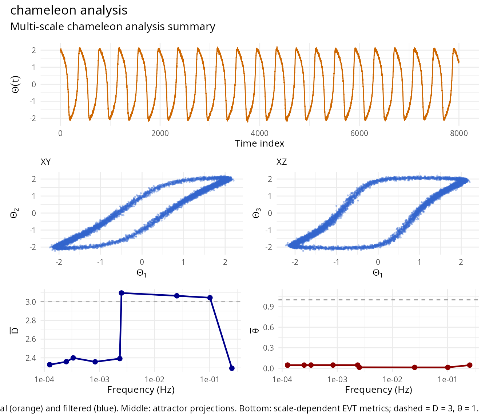
A.8 Duffing oscillator
set.seed(107)
n <- 10000
dt <- 0.01
x <- y <- numeric(n)
x[1] <- 0.5; y[1] <- 0
alpha <- 1; beta <- 1; delta <- 0.3; gamma <- 0.37; omega <- 1.2 # Stable chaotic params
for (i in 2:n) {
t_i <- i * dt
x[i] <- x[i-1] + dt * y[i-1]
y[i] <- y[i-1] + dt * (gamma * cos(omega * t_i) - delta * y[i-1] -
alpha * x[i-1] - beta * x[i-1]^3)
# Prevent divergence
if (abs(x[i]) > 10 || abs(y[i]) > 10) {
x[i] <- x[i-1]
y[i] <- y[i-1]
}
}
x_duffing <- x + 0.05 * rnorm(n)
result_duffing <- chameleon_analysis(x_duffing, m = 3, tau = 10, verbose = FALSE)
test_duffing <- chameleon_test(result_duffing$scale_metrics, n_surrogates = 999, verbose = FALSE)
print(test_duffing)
#>
#> Chameleon attractor test
#> ============================================================
#> Surrogates: 999 (scale_shuffle method)
#> Multiple testing correction: fisher
#>
#> Test statistics:
#> ------------------------------------------------------------
#> Statistic Observed Null Mean Null SD p-value d
#> ------------------------------------------------------------
#> D_trend 0.417 0.002 0.353 0.2640 1.18
#> theta_trend -0.817 0.000 0.344 0.0070 -2.37 **
#> ------------------------------------------------------------
#> Significance: *** p < 0.001, ** p < 0.01, * p < 0.05
#>
#> Combined p-value (fisher): 0.0135
#>
#> ============================================================
#> Conclusion: CHAMELEON ATTRACTOR DETECTED
#> Confidence: moderate
#>
#> Interpretation:
#> - theta decreases significantly with frequency
#> - Effect sizes are large (|d| > 0.8)
#>
#> Warnings:
#> ⚠ P-value at lower limit of resolution. Consider increasing n_surrogates.
plot(result_duffing)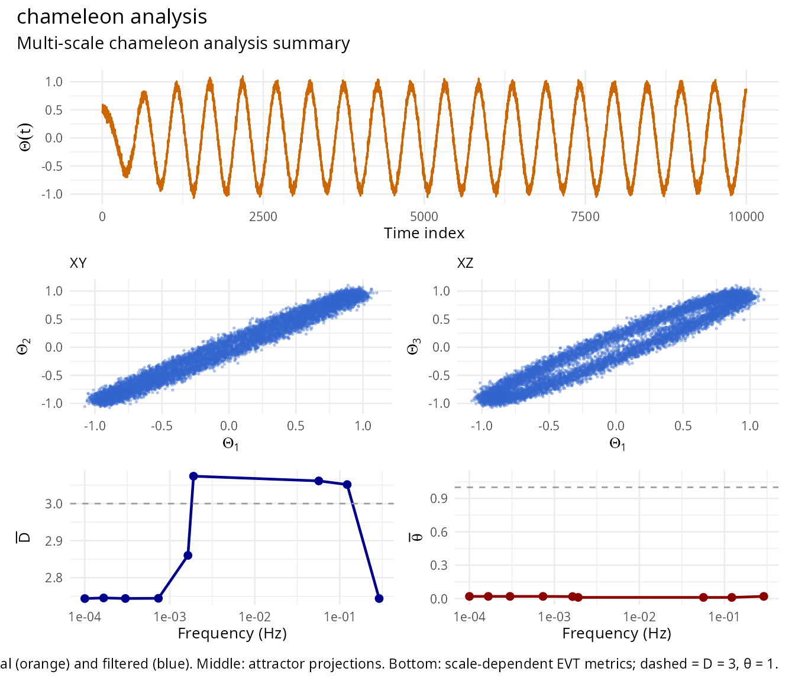
A.9 Henon map
set.seed(108)
n <- 10000
x_h <- y_h <- numeric(n)
x_h[1] <- 0.1; y_h[1] <- 0.1
a <- 1.4; b <- 0.3
for (i in 2:n) {
x_h[i] <- 1 - a * x_h[i-1]^2 + y_h[i-1]
y_h[i] <- b * x_h[i-1]
# Prevent divergence
if (abs(x_h[i]) > 10) {
x_h[i] <- x_h[i-1]
y_h[i] <- y_h[i-1]
}
}
result_henon <- chameleon_analysis(x_h, m = 3, tau = 1, verbose = FALSE)
test_henon <- chameleon_test(result_henon$scale_metrics, n_surrogates = 999, verbose = FALSE)
print(test_henon)
#>
#> Chameleon attractor test
#> ============================================================
#> Surrogates: 999 (scale_shuffle method)
#> Multiple testing correction: fisher
#>
#> Test statistics:
#> ------------------------------------------------------------
#> Statistic Observed Null Mean Null SD p-value d
#> ------------------------------------------------------------
#> D_trend -0.336 -0.018 0.318 0.3110 -1.00
#> theta_trend 0.436 -0.016 0.314 0.1750 1.44
#> ------------------------------------------------------------
#> Significance: *** p < 0.001, ** p < 0.01, * p < 0.05
#>
#> Combined p-value (fisher): 0.2129
#>
#> ============================================================
#> Conclusion: No chameleon behavior detected
#> Confidence: high
#>
#> Interpretation:
#> - Scale-dependent metrics do not vary significantly
#> - Attractor properties appear uniform across frequency scales
#>
#> Warnings:
#> ⚠ P-value at lower limit of resolution. Consider increasing n_surrogates.
plot(result_henon)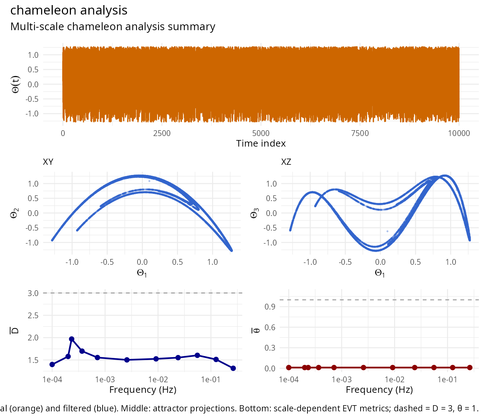
A.10 Logistic map (edge of chaos)
set.seed(109)
n <- 10000
x <- numeric(n)
x[1] <- 0.1
r <- 3.9 # Edge of chaos
for (i in 2:n) {
x[i] <- r * x[i-1] * (1 - x[i-1])
}
result_logistic <- chameleon_analysis(x, m = 3, tau = 1, verbose = FALSE)
test_logistic <- chameleon_test(result_logistic$scale_metrics, n_surrogates = 999, verbose = FALSE)
print(test_logistic)
#>
#> Chameleon attractor test
#> ============================================================
#> Surrogates: 999 (scale_shuffle method)
#> Multiple testing correction: fisher
#>
#> Test statistics:
#> ------------------------------------------------------------
#> Statistic Observed Null Mean Null SD p-value d
#> ------------------------------------------------------------
#> D_trend -0.580 0.003 0.326 0.0710 -1.79
#> theta_trend -0.479 0.014 0.311 0.1320 -1.59
#> ------------------------------------------------------------
#> Significance: *** p < 0.001, ** p < 0.01, * p < 0.05
#>
#> Combined p-value (fisher): 0.0531
#>
#> ============================================================
#> Conclusion: No chameleon behavior detected
#> Confidence: low
#>
#> Interpretation:
#> - Scale-dependent metrics do not vary significantly
#> - Attractor properties appear uniform across frequency scales
#>
#> Warnings:
#> ⚠ P-value at lower limit of resolution. Consider increasing n_surrogates.
plot(result_logistic)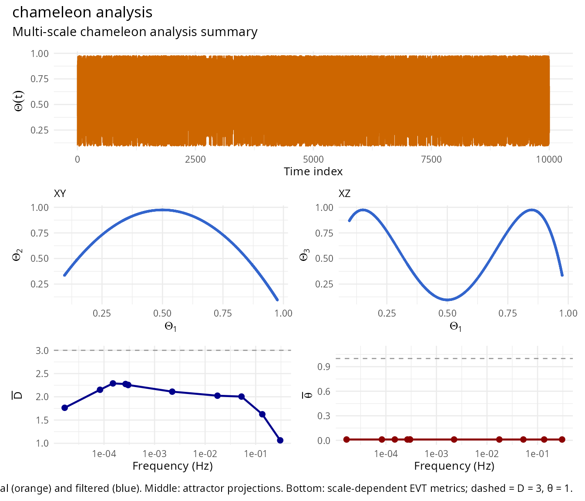
A.11 Summary of synthetic signal tests
synthetic_summary <- data.frame(
Signal = c("Gaussian noise", "AR(1)", "Sinusoid", "Multi-frequency",
"Lorenz", "Rossler", "Van der Pol", "Duffing",
"Henon", "Logistic"),
Mean_D = c(result_noise$evt_metrics$mean_d,
result_ar1$evt_metrics$mean_d,
result_sine$evt_metrics$mean_d,
result_multi$evt_metrics$mean_d,
result_lorenz$evt_metrics$mean_d,
result_rossler$evt_metrics$mean_d,
result_vdp$evt_metrics$mean_d,
result_duffing$evt_metrics$mean_d,
result_henon$evt_metrics$mean_d,
result_logistic$evt_metrics$mean_d),
Mean_theta = c(result_noise$evt_metrics$mean_theta,
result_ar1$evt_metrics$mean_theta,
result_sine$evt_metrics$mean_theta,
result_multi$evt_metrics$mean_theta,
result_lorenz$evt_metrics$mean_theta,
result_rossler$evt_metrics$mean_theta,
result_vdp$evt_metrics$mean_theta,
result_duffing$evt_metrics$mean_theta,
result_henon$evt_metrics$mean_theta,
result_logistic$evt_metrics$mean_theta),
p_value = c(test_noise$p_combined,
test_ar1$p_combined,
test_sine$p_combined,
test_multi$p_combined,
test_lorenz$p_combined,
test_rossler$p_combined,
test_vdp$p_combined,
test_duffing$p_combined,
test_henon$p_combined,
test_logistic$p_combined),
Conclusion = c(test_noise$conclusion,
test_ar1$conclusion,
test_sine$conclusion,
test_multi$conclusion,
test_lorenz$conclusion,
test_rossler$conclusion,
test_vdp$conclusion,
test_duffing$conclusion,
test_henon$conclusion,
test_logistic$conclusion)
)
kable(synthetic_summary, digits = 4,
caption = "Summary of chameleon detection on synthetic signals")| Signal | Mean_D | Mean_theta | p_value | Conclusion |
|---|---|---|---|---|
| Gaussian noise | 9.0307 | 0.0212 | 0.0256 | chameleon |
| AR(1) | 7.6557 | 0.0392 | 0.0436 | chameleon |
| Sinusoid | 3.5560 | 0.0319 | 0.7433 | non-chameleon |
| Multi-frequency | 3.0445 | 0.0301 | 0.3685 | non-chameleon |
| Lorenz | 2.1563 | 0.0703 | 0.4278 | non-chameleon |
| Rossler | 1.5220 | 0.0433 | 0.6545 | non-chameleon |
| Van der Pol | 2.2884 | 0.0461 | 0.3401 | non-chameleon |
| Duffing | 2.7436 | 0.0194 | 0.0135 | chameleon |
| Henon | 1.3130 | 0.0104 | 0.2129 | non-chameleon |
| Logistic | 1.0029 | 0.0103 | 0.0531 | non-chameleon |
A.12 Key observations
The A.11 table summarizes computed p-values and conclusions across the ten synthetic signals. The following expected patterns are consistent with the method’s theoretical premises.
Pure stochastic signals (noise, AR(1)) are not expected to show chameleon behavior. Scale-invariant processes have no systematic frequency dependence in \(\langle D \rangle\) or \(\langle \theta \rangle\), so \(D_{\mathrm{trend}}\) and \(\theta_{\mathrm{trend}}\) should be near zero and p-values should be large.
Simple deterministic systems (sinusoid, limit cycles) may yield borderline results. A pure sinusoid has a single dominant mode; MEMD produces few IMFs, leaving little scale variation to detect. With added noise the result depends on signal-to-noise ratio.
Chaotic systems (Lorenz, Rossler, Henon, Duffing) are expected to yield variable results across runs, because their attractor dimensionalities are intermediate and the short records used here (2000-5000 points) give moderate MEMD resolution. Significance is not guaranteed even for genuinely multiscale systems when the record is short relative to the slowest dynamical timescale.
The general principle is that synthetic chameleon behavior is difficult to demonstrate reliably at the record lengths used in this appendix, because MEMD needs sufficient data to resolve all targeted frequency scales. Real physical systems with complex multiscale structure and long records (turbulence, climate indices) are the primary intended use case [1].
References
[1] Alberti T, Daviaud F, Donner RV, Dubrulle B, Faranda D, Lucarini V (2023). Chameleon attractors in turbulent flows. Chaos, Solitons and Fractals 168:113195. doi:10.1016/j.chaos.2023.113195
[2] Theiler J, Eubank S, Longtin A, Galdrikian B, Farmer JD (1992). Testing for nonlinearity in time series: the method of surrogate data. Physica D 58:77-94. doi:10.1016/0167-2789(92)90102-S
[3] Phipson B, Smyth GK (2010). Permutation p-values should never be zero: calculating exact p-values when permutations are randomly drawn. Statistical Applications in Genetics and Molecular Biology 9:Article 39. doi:10.2202/1544-6115.1585
[4] Cohen J (1988). Statistical power analysis for the behavioral sciences. 2nd ed. Lawrence Erlbaum Associates. ISBN:978-0-8058-0283-2
[5] Fisher RA (1932). Statistical methods for research workers. Oliver and Boyd, Edinburgh. ISBN:978-0-05-002170-5
[6] Schreiber T, Schmitz A (1996). Improved surrogate data for nonlinearity tests. Physical Review Letters 77:635-638. doi:10.1103/PhysRevLett.77.635
[7] Lucarini V, Faranda D, Wouters J, Kuna T (2014). Towards a general theory of extremes for observables of chaotic dynamical systems. Journal of Statistical Physics 154:723-750. doi:10.1007/s10955-013-0914-6
[8] Faranda D, Messori G, Yiou P (2017). Dynamical proxies of North Atlantic predictability and extremes. Scientific Reports 7:41278. doi:10.1038/srep41278